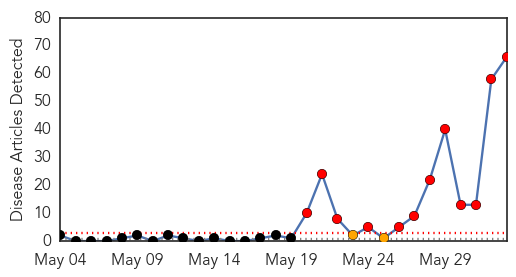
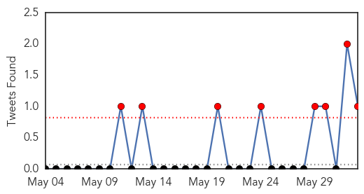

30 Day Trends
Web: 12 alerts, 2 warnings
Twitter: 8 alerts, 0 warnings
Top Articles:
- 1.000
- MERS Outbreak Spreads in South Korea
- 1.000
- South Korean MERS outbreak likely to spread, health officials say
- 1.000
- What is Middle East Respiratory Syndrome and what are the symptoms?
- 1.000
- MERS Outbreak Spreads in South Korea
- 1.000
- MERS kills two in South Korea and 30 people infected
- 1.000
- South Korea confirms first MERS deaths, 25 people diagnosed with virus
- 1.000
- MOPH affirms Thailand free of 2012 Corona virus patient
- 1.000
- South Korea reports first MERS deaths to growing public alarm
- 0.999
- Middle East respiratory syndrome coronavirus (MERS-CoV) in the Republic of Korea
- 0.999
- Health staff to watch for MERS-CoV infections
- 0.999
- South Korea confirms two MERS deaths
- 0.999
- South Korea Sees First 2 Deaths from Respiratory Illness
- 0.999
- Outbreak In South Korea Raises Fears Of Transmission To America, But Officials Say Risk Is Low
- 0.999
- Vietnam faces risk of infecting, spreading MERS: official
- 0.999
- MERS Virus Kills 2 in South Korea as Infections Rise to 25
- 0.999
- South Korea reports its first 2 deaths from MERS virus
- 0.999
- Vietnam faces risk of infecting, spreading MERS: official - Xinhua
- 0.999
- S Korea reports its first 2 deaths from MERS virus - Schools cancel classes, public alarm over MERS - Kuwait Times
- 0.999
- South Korea reports 2 deaths from MERS; health officials try to contain outbreak
- 0.999
- Asia Unbound Does MERS Pose a Serious Threat to China?
- 0.998
- More than 680 in South Korea isolated over MERS virus fears
- 0.998
- China Hospital Ballot to Decide Who Treats Mers Patient
- 0.998
- South Korea confirms first 2 MERS deaths
- 0.998
- Four suspected cases test negative for MERS-CoV
- 0.997
- South Korea reports its first 2 deaths from MERS virus
- 0.997
- MERS Scare Wreaks Havoc On Travel Plans To And From South Korea
- 0.997
- 2 deaths as MERS infections rise to 25
- 0.997
- More than 680 in South Korea isolated over MERS virus fears
- 0.997
- domain-b.com : S Korea reports two MERS deaths
- 0.997
- South Korea reports its first 2 deaths from MERS virus
- 0.997
- S.Korea Fights to Contain MERS Outbreak, Considers Tough Measures
- 0.996
- S.Korea reports first MERS deaths
- 0.996
- S Korea reports first two deaths from MERS
- 0.996
- South Korea Fighting MERS Outbreak, Tough Measures Considered
- 0.996
- UPDATE 4-S.Korea reports first two deaths from MERS respiratory illness
- 0.996
- South Korea reports first two MERS deaths
- 0.996
- Two have died of MERS in South Korea
- 0.996
- South Korea reports first two deaths from MERS respiratory illness
- 0.996
- South Korea reports first two deaths from MERS respiratory illness
- 0.996
- South Korea has first two Mers deaths
- 0.995
- Canada's SARS outbreak helped prepare us for MERS, doc says
- 0.995
- South Korea reports first MERS deaths as camels in Seoul zoo isolated
- 0.995
- South Korea reports first two deaths from MERS respiratory illness
- 0.993
- South Korea to stop suspected ...｜Society｜WCT
- 0.993
- Korean MERS total surges to 25 cases, 2 deaths
- 0.992
- South Korea reports first two deaths from Mers; some tour groups cancel trips, East Asia News & Top Stories
- 0.992
- Nurses cast ballot to decide who will treat Mers patient
- 0.992
- China's health department steps up precaution against MERS - Xinhua
- 0.992
- Condition of China's first MERS patient tends to worsen
- 0.987
- China's health department steps up precaution against MERS
Showing top 50 articles...
Top Tweets:
- 0.889
- MERS-CoV is actually completely different from ebola and it's only infecting a few people in a hospital. It's NOT "going around."
Web/News Articles
Tweets
Article Locations